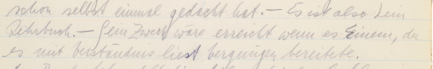

The FinderApp WiTTFind is work in progress (WIP).
Its normalized text representation is based on "CISWAB-XML" which is automatically generated from WAB’s XML transcriptions of the Wittgenstein Nachlass, and its facsimile representations are semi-automatically extracted from WAB’s Bergen Nachlass Edition of the Wittgenstein Nachlass.
To say it with the words of Ludwig Wittgenstein in MS104:
WiTTFind ..."ist also kein Lehrbuch. – Sein Zweck wäre erreicht, wenn es Einem, der es mit Verständnis liest Vergnügen bereitete"
